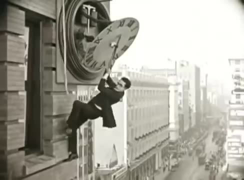

Safety Last!, frame at 3:07
Fred C. Newmeyer and Sam Taylor · 1923 · Silent film, black and white (frame)
Free to use
The clock scene was filmed on the roof of the Broadway Leasehold Building in Los Angeles. For the climb, sets matching the front of one bank building were built on the roofs of several downtown buildings of different heights, so Lloyd seemed to rise up a single wall. He did some of the climbing himself, four years after losing a thumb and forefinger in a film accident. The sequence was inspired by Bill Strother, a steeplejack who plays his pal and doubled for him in long shots.